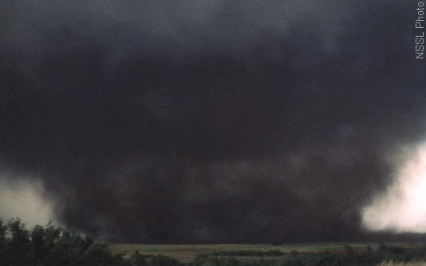

Credit: Photo courtesy of NSSL
|
Since, I was around 8 year old. I go to library and get almost every books on tornadoes and weather.
I have been obessed with tornadoes since I was a kid.
recently, I saw many youtube videos about storm chasers esp the infamous Reed Timmer dude. he run few websites at tornadovideos.net and tvnweather.com. He run livestream at live.tvnweather.com. I have seen few tornadoes on livestream in few days..... nice! they are good tornado finders. I found few videos that he took in Minnesota and even found a video of tornado that attacked my town on June 17 2010.... I was driving during tornado attack... I remeber the sky was black when I came out.... crazy.... I would love to chase tornadoes in a proper vehicle (special built vehicle for going into tornadoes). I would like to take few good video cameras into tornadoes myself and put my videos on youtube. I will contruct good box for the cameras. I will make the clear plastic part to not to be dirty easy. like put a block to keep plastic clean. I might find some tornado probes for sale. NOTE: I dont like when tornadoes kill and injury people and damange properties. I feel bad about the deadly tornadoes that attacked few cities in April/May 2011.
My Advice:
When you are driving and see a tornado funnel far away in the sky. Just keep driving and watch that funnel.
you could stop and take pictures or videotape that funnel. just make sure you know where that funnel is going.
If you are driving south, you will be fine. Most tornadoes move to NE from SW.
NEVER ever go take a shelter under passby bridges or under bridges.
Reed Timmer warned everyone publicly about not taking cover when a tornado is attacking.
|